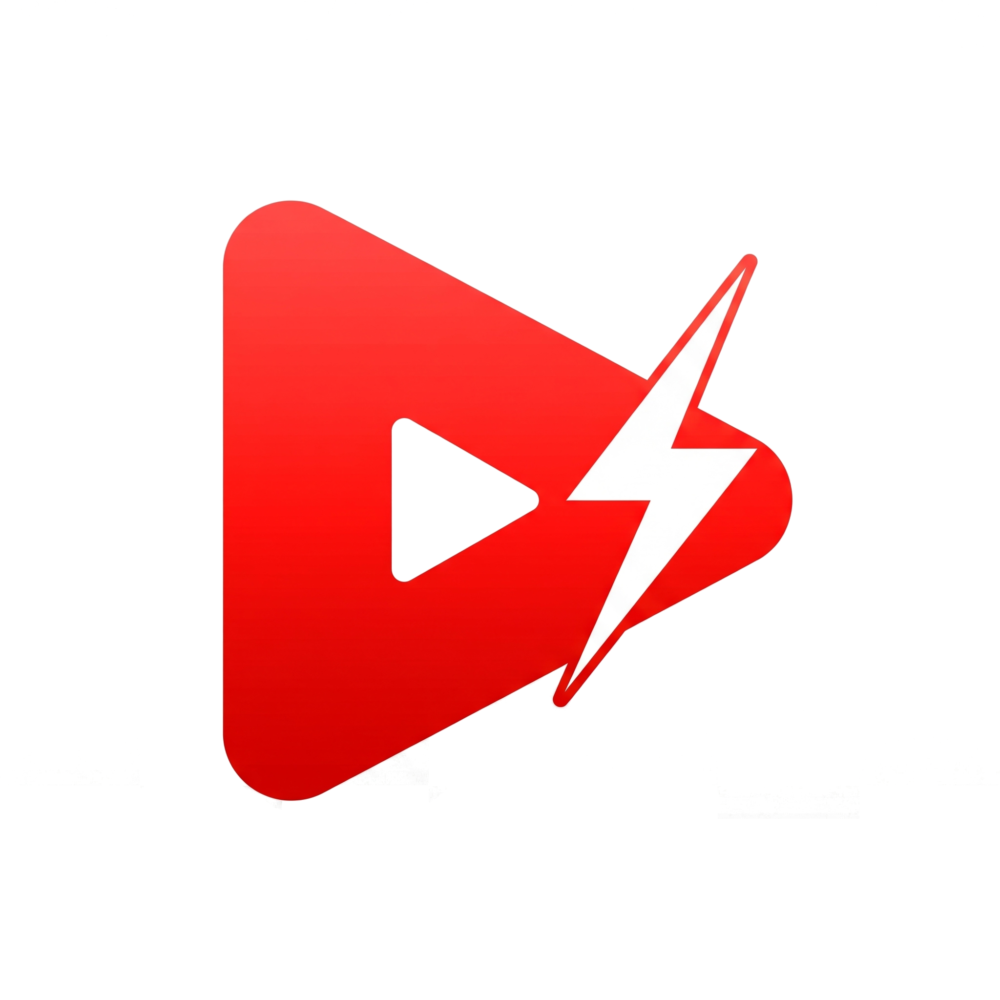

YTRSS
Un servicio RSS para tus suscripciones de YouTube.

El Problema
El feed de suscripciones de YouTube puede ser abrumador y está controlado por algoritmos. Quería una forma cronológica y limpia de ver los nuevos videos de mis canales favoritos, directamente en mi lector RSS.
La Solución
YTRSS es un script que se conecta a la API de YouTube, obtiene los últimos videos de los canales a los que estoy suscrito y genera un archivo `feed.xml` compatible con cualquier lector RSS. Además, utiliza una IA para crear resúmenes concisos de cada video.
Tecnologías Utilizadas
Python
YouTube Data API
XML Generation
AI for Summarization
Características Clave
Feed Cronológico
Adiós al algoritmo. Ve los videos en el orden en que se publicaron.
Resúmenes con IA
Decide si un video te interesa leyendo un resumen rápido antes de hacer clic.
Totalmente Personalizable
Configura fácilmente los canales que quieres seguir y la frecuencia de actualización.